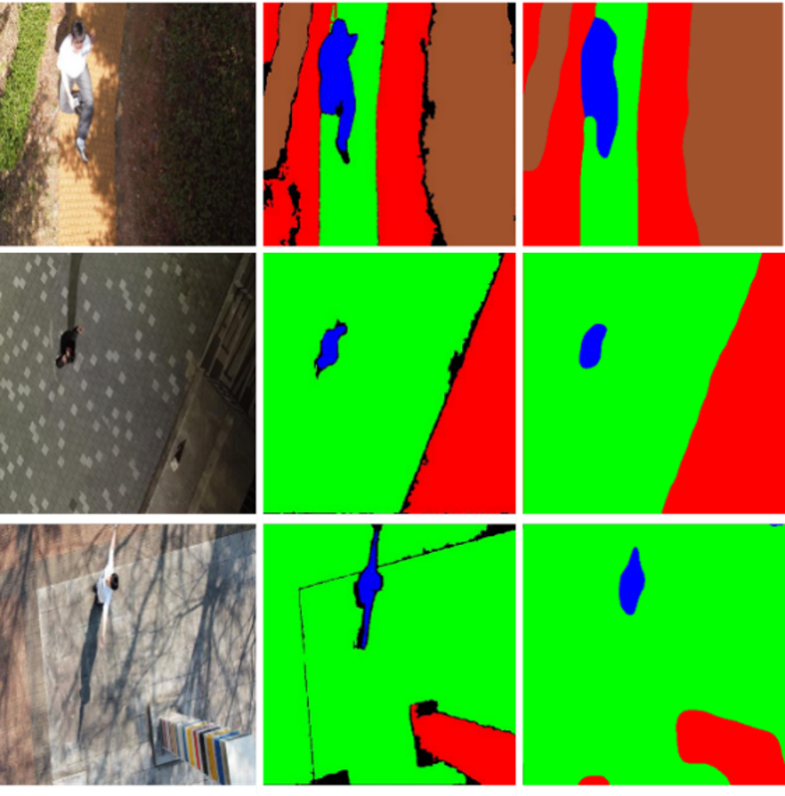

|
Lee Jun Seok Hi! I'm an Undergraduate student at CEE in Civil & Environmental Engineering at Yonsei University. I am interested in Robotics, Autonomous Driving, and Reinforcement Learning, but not limited to. Let's create a robot world for humans together. ryan082688@gmail.com / CV / Scholar / LinkedIn / Github |

|
Publications |
|
 |
Semantic Segmentation-Based Autonomous Flying Drone's Victim Recognition Algorithm in the Complex Terrain
Lee Jun-Seok*, Jeon Yu-jin*, Kim Eun-tai Under Review We recognize victims in complex terrain and judge the possibility of landing autonomous flying drones. |
Projects |

|
HL FMA Autonomous Driving Competition
2025.5 - ongoing Autonomous Driving competition for 1/5 size vehicles using artificial intelligence. |
|
VTOL Autonomous Flying Competition
2024.10 - ongoing 📝 project page / 🛠 code VTOL Autonomous Flight Drone Rescue Mission in Yonsei Drone. (Robot Aircraft Contest) |
|
AI Navigation
2024.10 - 2024.12 📝 project page / 🛠 code The CrossFormer model was applied to the DJI Tello drone in Yonsei Drone. |

|
Forest Carbon Compensation Support Project Solution
2024.06 - Present 📝 project page / 🛠 code A company that can find more forests for governments, more clients for businesses, and money hidden for individuals. |
Awards & Honors
|
Research Experiences
|
Education
|
|
|